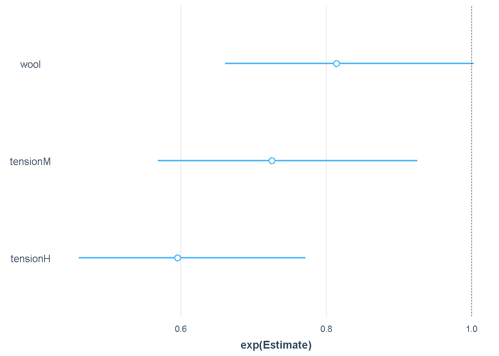

Chapter 6 Visualización de hallazgos usando jtools
Cuando comparte su análisis con otras personas, las tablas a menudo no son la mejor manera de captar la atención de las personas. Los diagramas y gráficos ayudan a las personas a comprender sus hallazgos más rápidamente. La forma más popular de visualizar datos en R es probablemente ggplot2 (que se enseña en el curso de visualización de datos de Dataquest), también usaremos un paquete de R increíble llamado jtoolsque incluye herramientas para resumir y visualizar específicamente modelos de regresión. Usemosjtools para visualizar poisson.model2
#install.packages("jtools")
# you may be asked to install 'broom' and 'ggstance' packages as well
#install.packages("broom")
#install.packages("ggstance")jtoolsproporciona plot_summs () y plot_coefs () para visualizar el resumen del modelo y también nos permite comparar diferentes modelos con ggplot2.
.
# Include jtools library
library(jtools)## Warning: package 'jtools' was built under R version 4.0.4##
## Attaching package: 'jtools'## The following object is masked from 'package:arm':
##
## standardize# plot regression coefficients for poisson.model2
plot_summs(poisson.model2, scale = TRUE, exp = TRUE)## Note: Pseudo-R2 for quasibinomial/quasipoisson families is calculated by
## refitting the fitted and null models as binomial/poisson.## Registered S3 methods overwritten by 'broom':
## method from
## tidy.glht jtools
## tidy.summary.glht jtools## Loading required namespace: broom.mixed
# plot regression coefficients for poisson.model2 and poisson.model
plot_summs(poisson.model, poisson.model2, scale = TRUE, exp = TRUE)## Note: Pseudo-R2 for quasibinomial/quasipoisson families is calculated by
## refitting the fitted and null models as binomial/poisson.## Loading required namespace: broom.mixed
## Loading required namespace: broom.mixedEn el código anterior, plot_summs (poisson.model2, scale = TRUE, exp = TRUE)traza el segundo modelo usando la familia cuasi-poisson en glm.
El primer argumento en plot_summs ()es el modelo de regresión que se utilizará, puede ser uno o más de uno.
scale ayuda con el problema de las diferentes escalas de las variables.exp se establece en TRUE porque para la regresión de Poisson es más probable que nos interesen los valores exponenciales de las estimaciones en lugar de los lineales.
Puede encontrar más detalles sobre jtools y plot_summs () aquí en la documentación.
También podemos visualizar la interacción entre variables predictoras.jtools proporciona diferentes funciones para diferentes tipos de variables. Por ejemplo, si todas las variables son categóricas, podríamos usarcat_plot ()para comprender mejor las interacciones entre ellas. Para variables continuas, se usa interact_plot ().
En los datos de warpbreaks tenemos variables predictoras categóricas, por lo que usaremos cat_plot ()para visualizar la interacción entre ellas, dándole argumentos que especifiquen qué modelo nos gustaría usar, la variable predictora que estamos viendo y la otra variable predictora con la que se combina para producir el resultado.
library(broom)## Warning: package 'broom' was built under R version 4.0.4library(jtools)
library(ggstance)## Warning: package 'ggstance' was built under R version 4.0.4#interact_plot(poisson.model2,pred = wool,modx =tension)
# argument 1: regression model
# pred: The categorical variable that will appear on x-axis
# modx: Moderator variable that has an effect in combination to pred on outcomelibrary(jtools)
#install.packages("broom")
#install.packages("ggstance")
#cat_plot(poisson.model2,pred = wool,modx = tension)
# argument 1: regression model
# pred: The categorical variable that will appear on x-axis
# modx: Moderator variable that has an effect in combination to pred on outcom#cat_plot(poisson.model2, pred=tension, modx = wool, #geom = "line")